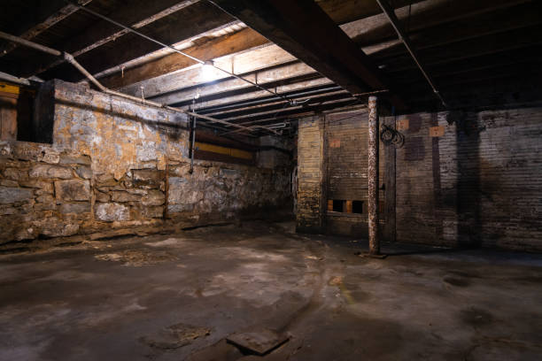

STORIES
Are you hyperactive with your imagination? Are you maybe going a step too far?
You need help! And so do I! These are some of my stories that I will share with you though.
The Basement
Three siblings find out their parents are both gone. They decide to go inside the basement even though they are not supposed to.

Ultra-Violet Light
Mysterious and strange things keep happening surrounding Stygian, a dark shadow who always gets into trouble.
LOCOBOROUGH
The weird citizens of Locoborough have been disturbing the rest of the state.